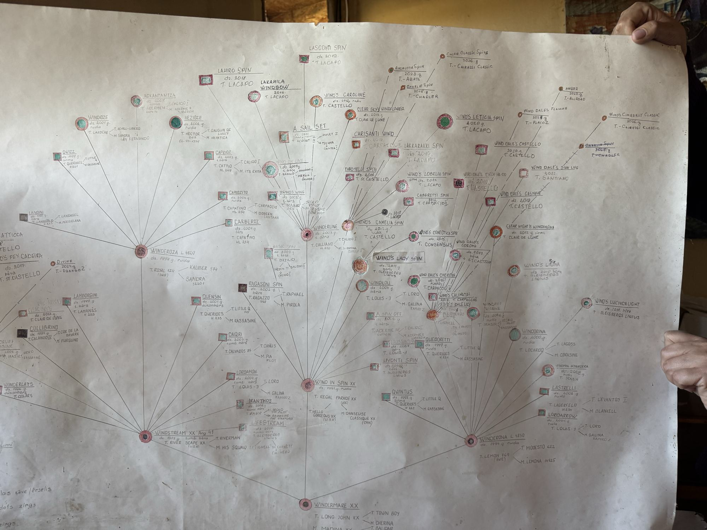
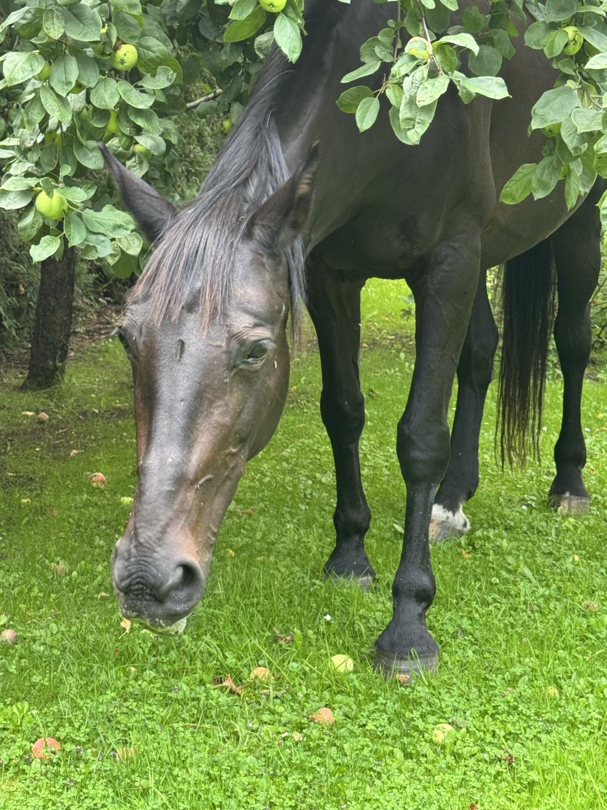

Divi zirgi Berģos un tas, no kurienes viņi nāk: ciltsraksti četrās paaudzēs, ciltsmātes pēcnācēju koks un audzētavas ar roku zīmētie plakāti, kas reģistrā neparādās.

Latvijas siltasinis · 2026
Latvijas siltasinis · 2008Sākums bija ar roku zīmēti audzētavas plakāti. No tiem nolasīti vārdi, bet pašas radniecības ņemtas no lwhorse.lv: no katras ciltsmātes izmeklēti visi kumeļi, un katra ķēve tālāk rekursīvi. Tāpēc kokā ir tikai mātes līnija — ērzeļu pēcnācēji, kas dzimuši citās saimniecībās, tajā neparādās.
Plakāti glabā to, kā datubāzē nav: kurš zirgs pārdots, kurš palicis vaislā un kurš vēl ir jaunzirgs. Tie ir Chloé lapas beigās.